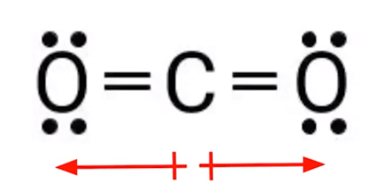

Some molecules are not polar even though there are polar bonds present
{width="3.4583333333333335in" height="1.6770833333333333in"}
Net dipole = 0
Molecular geometry affects polarity
When a central atom is surrounded symmetrically in 3D space by identical atoms, the molecule is nonpolar
Linear, trigonal planar, tetrahedral, trigonal bipyramidal, and octahedral molecules will be nonpolar as long as the surrounding atoms are identical
A lone pair usually means the molecule is polar
Except:
Linear (2 / 3 / 5) and square planar (4 / 2 / 6) molecules
Dipoles still cancel each other out